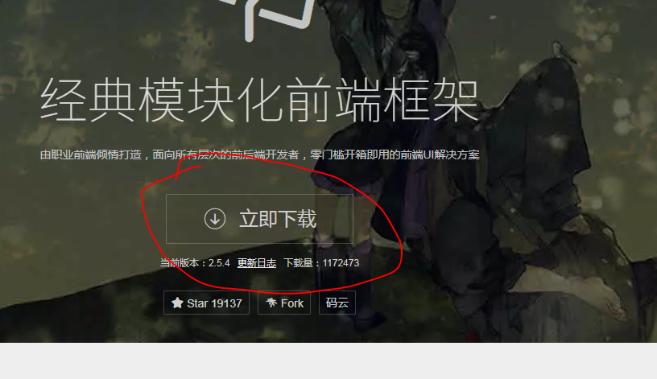
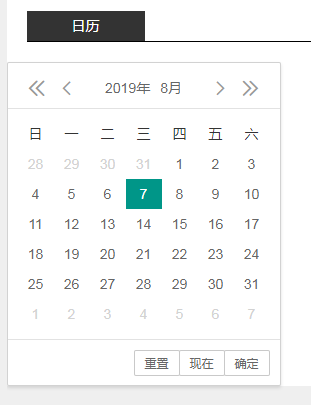

进入https://www.layui.com/首页下载layui文件

下载解压后把文件放在static静态文件中，
html页面引入css和js
<link rel="stylesheet" href="/static/layui/css/layui.css" media="all">
<script src="/static/layui/layui.js"></script>选定日历要放置的代码块，js也顺便放在旁边了，
<div class="newsbox f_l " id="test-n1">
<div class="newstitle"><span><a href="/zcfg/">+</a></span><b>日历</b></div>
<script>
layui.use('laydate', function () {
var laydate = layui.laydate;
laydate.render({
elem: '#test-n1'
, position: 'static'
});
});
</script>
</div>页面效果，

官网上面有很全的教程，
done。